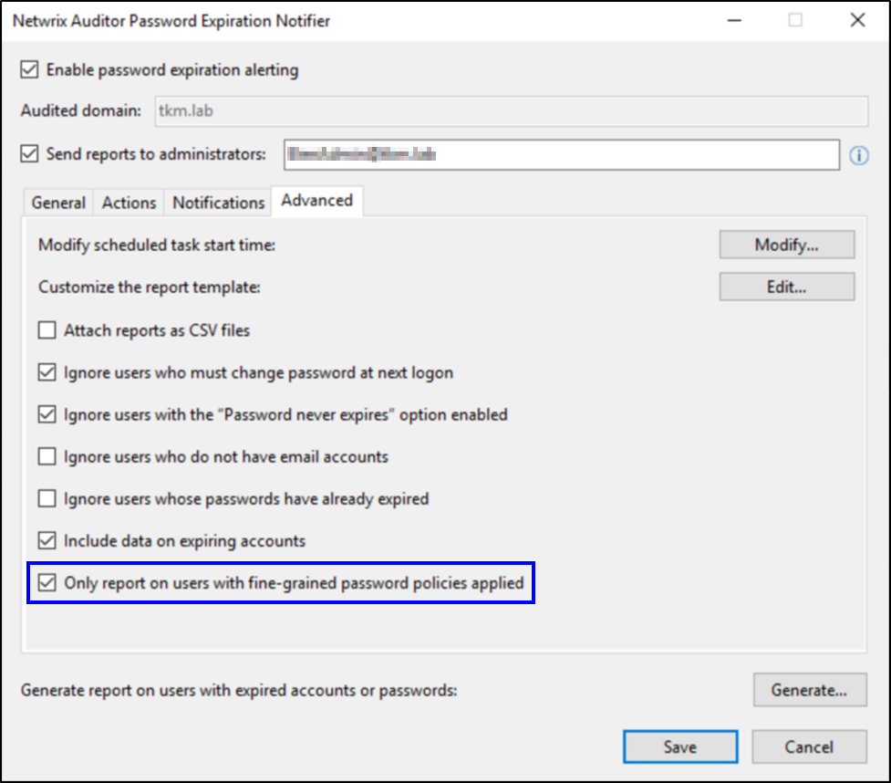

Question
Does Netwrix Password Expiration Notifier (PEN) support Fine-Grained Password Policies?
Answer
Yes, PEN supports Fine-Grained Password Policies. To configure PEN to work only with Fine-Grained Password Policies, refer to the following steps:
-
Launch PEN.
-
Select or create a Monitoring Plan that will apply Fine-Grained Password Policies.
-
Click the Advanced Tab.
-
At the bottom of the Advanced Options window, select the Only report on users with Fine-Grained Password Policies applied box.
 -
Click Save.